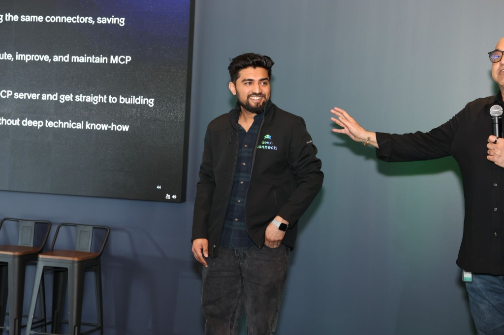
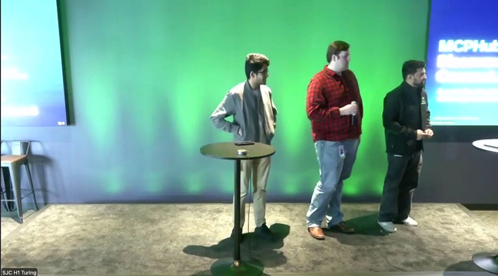
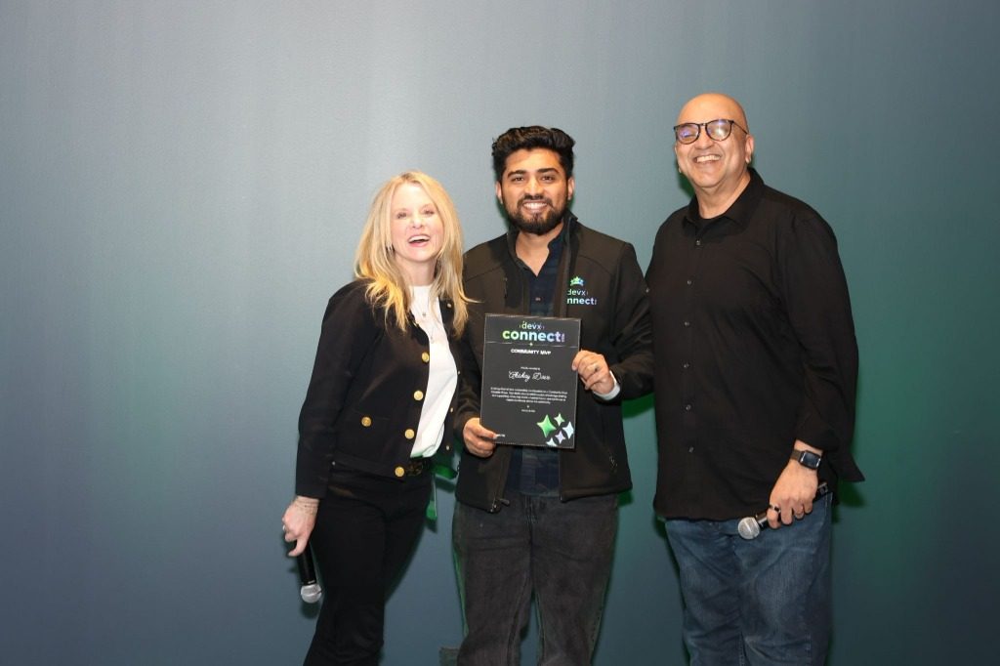
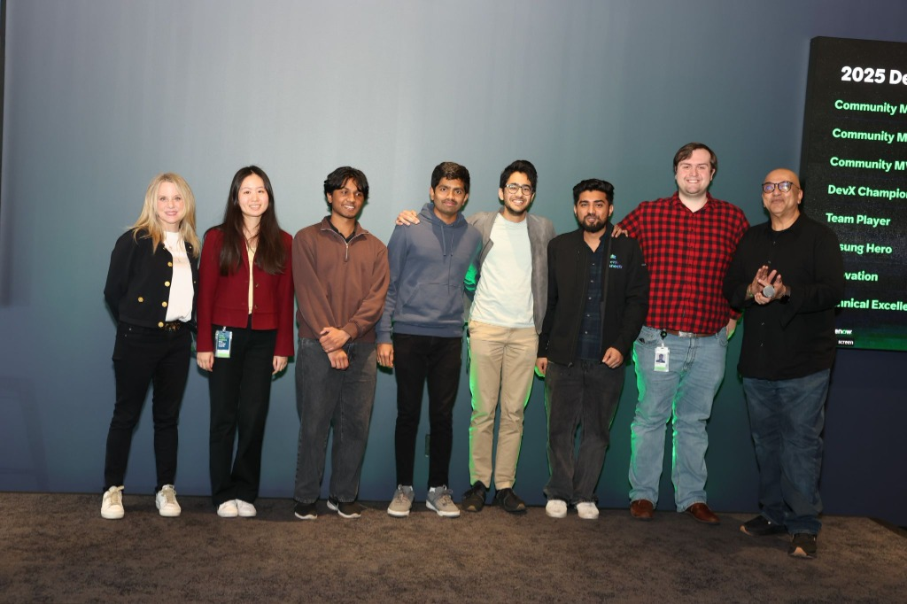

Conversational AI Integration | ServiceNow × LangChain × Moveworks | API Platform Engineering
Staff-level full-stack engineer with 8+ years designing production API and agent-tooling platforms. Architected the developer-facing tool surface and orchestration layer for an AI agent platform used daily by 150+ engineers and PMs across 7+ enterprise instances (35+ tools, 10 categories).
Currently leading the integration of ServiceNow AI agent configurations via LangChain servers to Moveworks, enabling conversational interactions for all partner operations. Deep hands-on experience with MCP server architecture, schema-driven tooling, and CI/CD-enforced engineering standards. Proven track record setting technical direction and driving cross-team architecture decisions as an individual contributor, without formal authority.
Leading the integration of ServiceNow instance AI agent configurations via LangChain servers to Moveworks, enabling conversational interactions for all partner operations. This initiative transforms traditional partner workflows into natural language interfaces, making complex business processes accessible through conversational AI.
Recognized for technical excellence, innovation in AI/agent platforms, and contributions to the developer community. My work has transformed how teams interact with enterprise systems through conversational AI and MCP server architecture.

Architected the MCP (Model Context Protocol) server integration that revolutionizes how 130+ developers interact with ServiceNow daily. This innovation provides a standardized, agent-ready interface for all ServiceNow-related activities.
Built the orchestration layer that routes, validates, and safely executes agent requests across enterprise instances. Established engineering standards through Architecture Review Board (EARB) submission, securing production approval on reliability and observability grounds.

Built ACL Assist end-to-end, a conversational AI agent achieving 87% NLU accuracy for access-control decisioning. This solution transforms complex ACL management into natural language interactions.
Implemented comprehensive prompt versioning for safe model updates and built an evaluation framework that caught regressions before they reached production. Applied contract-enforcement mindset to model behavior instead of API schemas.

Recognized as a DevX Community MVP for outstanding contributions to the developer community, technical leadership, and mentorship in AI-native development practices.

Recognized for exceptional teamwork and clinical excellence in delivering high-impact solutions. Awarded for collaborative approach to complex technical challenges.
Co-inventors: Sushant Guha, Hayden Schultz, Rishitha Reddy Kallu
Conversational AI agent for access-control decisioning
California State University San Bernardino | December 2016
University of Mumbai | June 2015